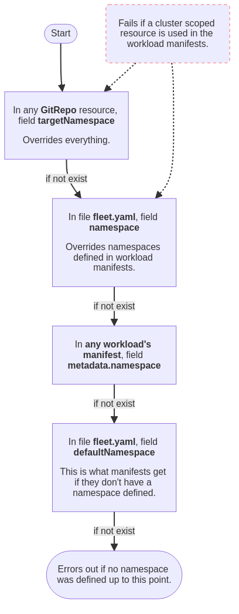

Espacios de nombres
Espacios de nombres de carga de trabajo
Comportamiento de creación de espacio de nombres en paquetes
Al desplegar un paquete SUSE® Rancher Prime Continuous Delivery, el espacio de nombres especificado se creará automáticamente si no existe ya.
Configuración de espacios de nombres de carga de trabajo
Al configurar espacios de nombres de carga de trabajo, es importante tener en cuenta que ciertas opciones están diseñadas para anular los valores de otras opciones o definiciones de espacio de nombres en los recursos de carga de trabajo. En algunos casos, establecer espacios de nombres utilizando algunas opciones puede resultar en errores si los recursos a desplegar contienen recursos sin espacio de nombres. Para obtener una mejor comprensión de cómo interactúan estas opciones, consulte el diagrama a continuación. Para más detalles sobre una opción específica, consulte el GitRepo o la referencia fleet.yaml.

Despliegues entre espacios de nombres
Es posible crear un GitRepo que se desplegará a través de espacios de nombres. El propósito principal de esto es que un equipo central privilegiado pueda gestionar la configuración común para muchos clústeres que son gestionados por diferentes equipos. La forma en que se logra esto es creando un recurso BundleNamespaceMapping en un clúster.
Si estás creando un recurso BundleNamespaceMapping, es mejor hacerlo en un espacio de nombres que solo contenga GitRepos y no Clusters. Parece volverse confuso si tienes clústeres en el mismo repositorio, ya que el GitRepos entre espacios de nombres siempre se evaluará en relación con el espacio de nombres actual. Así que si tienes clústeres en el mismo espacio de nombres, puede que desees convertirlos en clústeres canarios.
Un BundleNamespaceMapping tiene solo dos campos. Los cuales son los siguientes
kind: BundleNamespaceMapping
apiVersion: fleet.cattle.io/v1alpha1
metadata:
name: not-important
namespace: typically-unique
# Bundles to match by label. The labels are defined in the fleet.yaml
# labels field or from the GitRepo metadata.labels field
bundleSelector:
matchLabels:
foo: bar
# Namespaces to match by label
namespaceSelector:
matchLabels:
foo: barSi el campo BundleNamespaceMappings bundleSelector coincide con una etiqueta Bundles, entonces ese criterio de objetivo Bundle se evaluará contra todos los clústeres en todos los espacios de nombres que coincidan con namespaceSelector. Se pueden especificar etiquetas para los paquetes creados desde git colocando etiquetas en el fleet.yaml o en el campo metadata.labels del GitRepo.
Restricting GitRepos
Un espacio de nombres puede contener varios recursos GitRepoRestriction. Todos los GitRepos creados en ese espacio de nombres se comprobarán contra la lista de restricciones. Si un GitRepo viola una de las restricciones, su BundleDeployment estará en un estado de error y no se desplegará.
Esto también se puede utilizar para establecer los valores predeterminados para los campos serviceAccount y clientSecretName de GitRepo.
kind: GitRepoRestriction
apiVersion: fleet.cattle.io/v1alpha1
metadata:
name: restriction
namespace: typically-unique
allowedClientSecretNames: []
allowedRepoPatterns: []
allowedServiceAccounts: []
allowedTargetNamespaces: []
defaultClientSecretName: ""
defaultServiceAccount: ""Espacios de nombres de destino permitidos
Esto se puede utilizar para limitar un despliegue a un conjunto de espacios de nombres en un clúster descendente. Si hay una restricción de allowedTargetNamespaces presente, todos los GitRepos deben especificar un targetNamespace y el espacio de nombres especificado debe estar en la lista de permitidos. Esto también impide la creación de recursos a nivel de clúster.
Selector de espacio de nombres de destino permitido
allowedTargetNamespaceSelector restringe los despliegues a espacios de nombres en clústeres descendentes cuyas etiquetas coincidan con el selector dado. Cuando este campo se establece en un GitRepoRestriction, todos los GitRepos deben especificar un targetNamespace.
El agente de Fleet comprueba las etiquetas de ese espacio de nombres en el clúster descendente antes de desplegar un paquete:
-
Si el espacio de nombres existe y sus etiquetas coinciden con el selector, el despliegue continúa.
-
Si el espacio de nombres existe pero sus etiquetas no coinciden, el
BundleDeploymentse -
establece en un estado de error y el paquete no se despliega.
-
Si el espacio de nombres no existe en el clúster descendente, el despliegue falla con un error. Pre-crear el espacio de nombres y etiquetarlo correctamente es necesario; la opción
createNamespacede Helm no se aplica cuando este selector está establecido.
Múltiples recursos GitRepoRestriction en el mismo espacio de nombres contribuyen cada uno con su allowedTargetNamespaceSelector. Los selectores se fusionan antes de ser propagados a los despliegues de paquetes; un espacio de nombres debe satisfacer todos ellos.
kind: GitRepoRestriction
apiVersion: fleet.cattle.io/v1alpha1
metadata:
name: restriction
namespace: project1
allowedTargetNamespaceSelector:
matchLabels:
team: frontendSUSE® Rancher Prime Continuous Delivery Espacios de nombres
Todos los tipos en el SUSE® Rancher Prime Continuous Delivery gestor están en un espacio de nombres. Los espacios de nombres de un recurso personalizado, por ejemplo, GitRepo, no influyen en el espacio de nombres de los recursos desplegados.
Entender cómo se utilizan los espacios de nombres en el SUSE® Rancher Prime Continuous Delivery gestor es importante para comprender el modelo de seguridad y cómo se puede utilizar SUSE® Rancher Prime Continuous Delivery de manera multi-inquilino.

GitRepos, Bundles, Clusters, ClusterGroups
Todos los selectores para los objetivos de GitRepo se evaluarán contra el Clusters y el ClusterGroups en los mismos espacios de nombres. Esto significa que si le das create o update privilegios a un tipo GitRepo en un espacio de nombres, ese usuario final puede modificar el selector para que coincida con cualquier clúster en ese espacio de nombres. Esto significa que, en la práctica, si quieres que dos equipos gestionen por sí mismos sus propias registraciones de GitRepo pero no deberían poder dirigirse a los clústeres de los demás, deberían estar en diferentes espacios de nombres.
El espacio de nombres de registro de clúster, llamado 'workspace' en Rancher, contiene los recursos Cluster y ClusterRegistration, así como cualquier GitRepos y Bundles.
Rancher creará dos espacios de trabajo SUSE® Rancher Prime Continuous Delivery: fleet-default y fleet-local.
-
fleet-defaultcontendrá todos los clústeres descendentes que ya están registrados a través de Rancher. -
fleet-localcontendrá el clúster local por defecto. El acceso afleet-locales limitado.
|
Información importante
Eliminar el espacio de trabajo, el espacio de nombres de registro de clúster, eliminará todos los clústeres dentro de ese espacio de nombres. Esto desinstalará todos los paquetes desplegados, excepto el Fleet agent, de los clústeres eliminados. |
Si estás utilizando SUSE® Rancher Prime Continuous Delivery en un estilo de clúster único, el espacio de nombres siempre será fleet-local. Consulta la sección fleet-local espacios de nombres para más información.
Para un estilo de multi-cluster, por favor asegúrate de utilizar el repositorio correcto que se asignará a los clústeres de destino adecuados.
Espacios de nombres internos
Espacio de Nombres de Registro del Clúster: fleet-local
El espacio de nombres fleet-local es un espacio de nombres especial utilizado para el caso de uso de un solo clúster o para iniciar la configuración del gestor de SUSE® Rancher Prime Continuous Delivery. El acceso al clúster local debe estar limitado a los operadores.
Cuando se instala SUSE® Rancher Prime Continuous Delivery, se crea el espacio de nombres fleet-local junto con un Cluster llamado local y un ClusterGroup llamado default. Si no se especifican objetivos en un GitRepo, por defecto se dirige al ClusterGroup llamado default. Esto significa que todos los GitRepos creados en fleet-local apuntarán automáticamente al local Cluster. El local Cluster se refiere al clúster en el que se está ejecutando el gestor SUSE® Rancher Prime Continuous Delivery.
Espacio de Nombres del Sistema: cattle-fleet-system
El controlador SUSE® Rancher Prime Continuous Delivery y el agente SUSE® Rancher Prime Continuous Delivery se ejecutan en este espacio de nombres. Se espera que todas las cuentas de servicio referenciadas por GitRepos vivan en este espacio de nombres en el clúster en sentido descendente.
Espacio de Nombres de Registro del Sistema: cattle-fleet-clusters-system
Este espacio de nombres contiene secretos para el proceso de registro del clúster. No debe contener otros recursos, especialmente secretos.
Espacios de nombres de clústeres
Para cada clúster que se registre, se crea un espacio de nombres por el gestor SUSE® Rancher Prime Continuous Delivery para ese clúster. Estos espacios de nombres se nombran en la forma cluster-${namespace}-${cluster}-${random}. El propósito de este espacio de nombres es que todos los BundleDeployments para ese clúster se coloquen en este espacio de nombres y luego se le dé acceso al clúster descendente para observar y actualizar BundleDeployments solo en ese espacio de nombres.